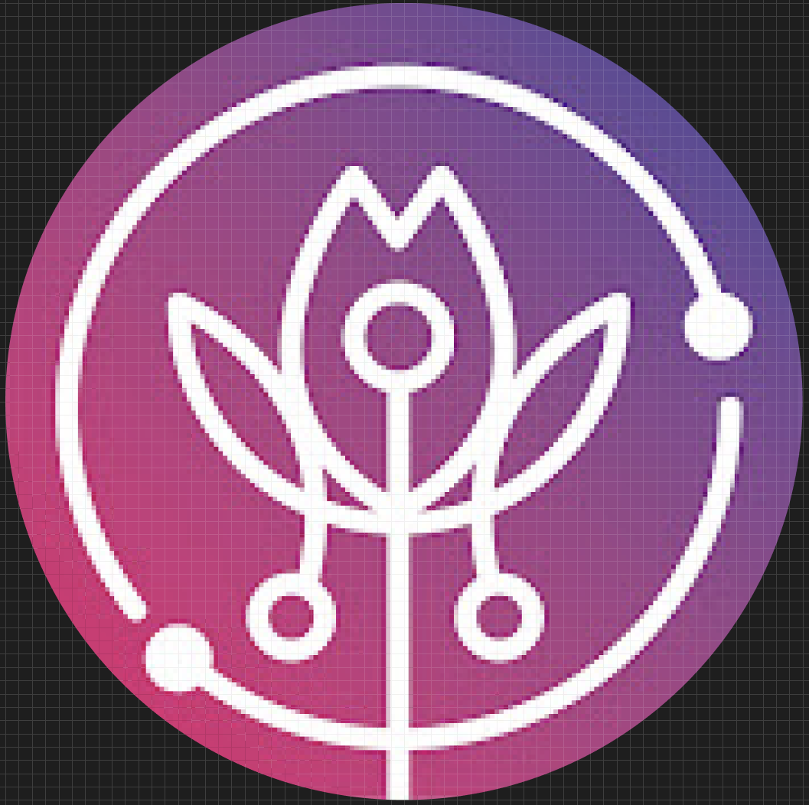

<ion-header>
  <ion-toolbar color="mmt">
    <ion-buttons slot="start">
      <ion-menu-button></ion-menu-button>
    </ion-buttons>
    <ion-title>
      Perfil
    </ion-title>
  </ion-toolbar>
</ion-header>

<ion-content>


  <ion-list *ngIf="permission">
    <!-- ** Aqui inicia la lists -->

    <ion-list-header>
      Conversacion reciente
    </ion-list-header>
    <ion-item *ngFor="let user of users">
      <ion-avatar slot="start">
        
      </ion-avatar>
      <ion-avatar slot="end">
        <ion-icon name="search-outline"></ion-icon>
      </ion-avatar>
      <ion-label>
        <h2 class="color-mmt">{{user.name}}</h2>
        <h3>{{user.state}}</h3>
        <p>{{user.description}}</p>
      </ion-label>
    </ion-item>
  </ion-list>

  <ion-grid>
    <ion-row class="fondo">
      <ion-col sizeLg="4" sizeMd="4" sizeXs="6">
        <div class="texto">Texto1</div>
      </ion-col>
      <ion-col sizeLg="4" sizeMd="4" sizeXs="6">
        <div class="texto">Texto1</div>
      </ion-col>
      </ion-row>
  </ion-grid>


</ion-content>